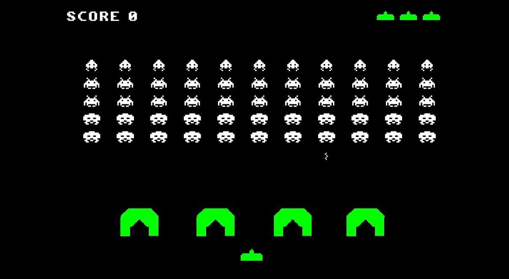
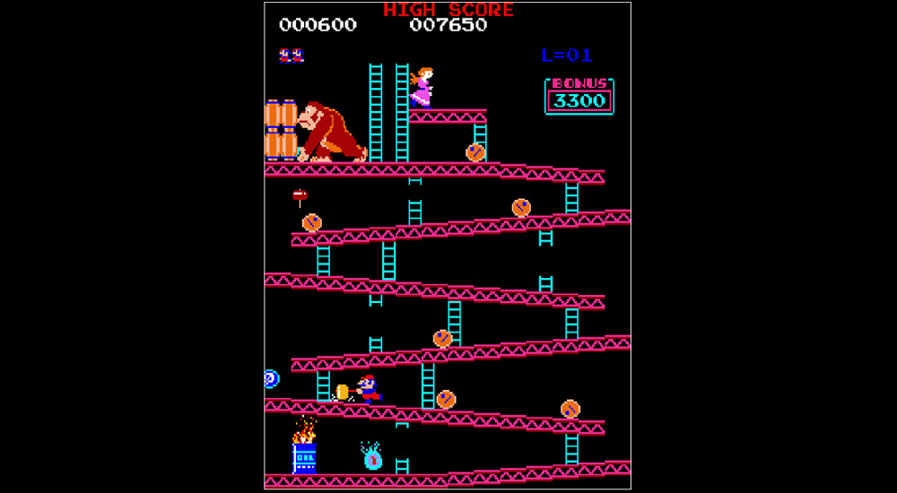
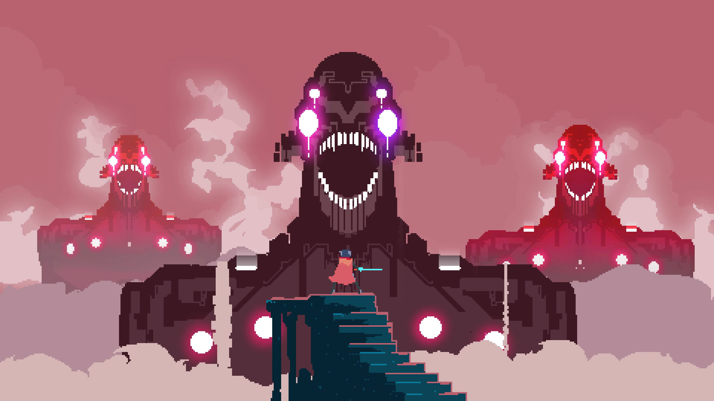

В 1972 году американская Atari создала Pong. Основатель компании Нолан Бушнелл предложил своему программисту Аллану Алькорну сделать игру о теннисе. Подобную уже реализовали на приставке Magnavox Odyssey под названием Table tennis, из-за чего против Atari подали иск. Несмотря на это, ранний аркадный хит запустил индустрию интерактивных развлечений.
Сам Бушнелл в 1971 году сделал «стрелялку» Computer Space, но она провалилась. Все три игры отличала характерная минималистичная графика из белых пикселей на черном экране. Она лишь отображала предметы, оставляя воображению игрока додумывать остальное. Принцип до сих пор является краеугольным для пиксель-арта.
 Легендарный пиксельный пришелец-краб пришел к нам из Японии. Игру Space Invaders, или «Космические захватчики», в 1978 году разработал для аркадных автоматов Томохиро Нисикадо. Все просто: стреляешь вверх из пушки по пришельцам, уворачиваешься от ответного огня. Игра породила жанр Shoot ’em up и увеличила вчетверо продажи консоли Atari 2600. Нисикадо вдохновлялся стилем и идеями «Звездных войн», что видно и по пришельцам, и по самой битве с «бластерным» огнем. Теперь уже его игрой вдохновляются новые художники. Кстати, именно из Япония произошли все самые знаковые «пиксельные» игры и вряд ли это совпадение.
Еще один японский программист, Тору Иватани, хотел сделать игру для широкой аудитории и достойного конкурента «Космических пришельцев». Поэтому выбрал объединяющую тему: еду. Его Puck-man бегал по лабиринту, ел точки и уворачивался от привидений. Никакого насилия!
Изначально игра Pacman называлась Puck-man, но при локализации название изменили, чтобы дети и вандалы не пытались превратить слово на автомате в ругательство на английском языке. С художественной точки зрения Пакман и призраки продемонстрировали, как можно простыми средствами создать выразительных и характерных персонажей. Прием с выделением цветом и гипертрофированными деталями использовали в следующей важной игре…
 Разработчики из Nintendo хотели, чтобы главным героем аркадной игры Donkey Kong стал американский персонаж, моряк Попай. Увы, создатели Попая не разглядели потенциала и запретили использовать его образ. Горько прогадали! Donkey Kong стала бестселлером, так что в следующем году «Попая» тоже издали, но такой же судьбы и громкой славы он не снискал.
Японские разработчики выпустили залихватский платформер с оригинальным главным героем. Огромный нос, усы, яркий комбинезон и красная кепка — необходимость. Созданный из нескольких пикселей персонаж должен быть узнаваемым. Изначально безымянный герой был «плотником». В последующих играх он поменял профессию и превратился во всем известного сантехника.
После своего дебюта «плотник» появился в серии игр Nintendo под именем Марио. Сначала это были игры для аркадных автоматов, а затем — домашние приставки. Марио сделал компанию тем, чем она является сейчас, и прославил своего создателя, Шигеру Миямото. Гонки на картах пришли потом; в 1985 году вышла Super Mario Bros. для домашней приставки Nintendo Entertainment System (NES). Яркая гамма, запоминающиеся элементы вроде грибочков и черепах и свой собственный стиль, который отчетливо виден даже по паре точек. Этот 8-битный шедевр до сих пор формирует идеи художников о том, каким должен быть пиксель-арт. Как в Марио, конечно же!
После всеми любимой "классики" было множество других, стоящих внимания пиксельных игр. Однако в середине нулевых нотсальгия и простота создания таких игр на простых движках по типу Game Maker Studio дала возможность почти любому человеку вне зависимости от возраста и умений создать свою "восьмибитную" игру. Из-за этого все игровые площадки сильно переполнились играми со схожими механиками и различющиеся лишь разной плохой пиксельной графикой и анимациями.
Не смотря на это и по сей день выходят довольно неплохие проекты в пиксельной графике. Если когда-то стиль придавал игре настольгию, то сейчас это скорее просто другой способ изображения персонажей и придавание другой атмосферы игре.

Hyper Light Drifter
Снизу представлены пример двух простейших "восьмибитных" игр, написанных на JavaScript. В первой игре нужно управлять ракетой и уворачиваться от летящих астероидов. Вторая игра является интерпретацией классической восьмибитной игры "Pong".